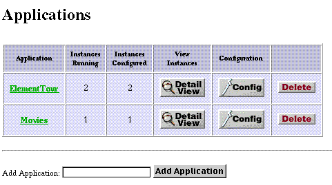

Table of Contents
Table of Contents  Previous Section
Previous Section

Click a hyperlink in the Application column to start a session with an instance of that application.
The Application Detail View page of the Monitor application provides you with detailed information about all configured instances of a WebObjects application. Click the Detail View button next to an application in the Applications page to go to the detail page, which looks similar to the following example:
At the top of the page is the title of the application. When one or more instances of an application are running then, this title becomes a hyperlink. Clicking on the hyperlink opens a new browser window and connects to the running application.
The tables of the Application Detail View contain various information and controls:
Table of Contents  Next Section
Next Section